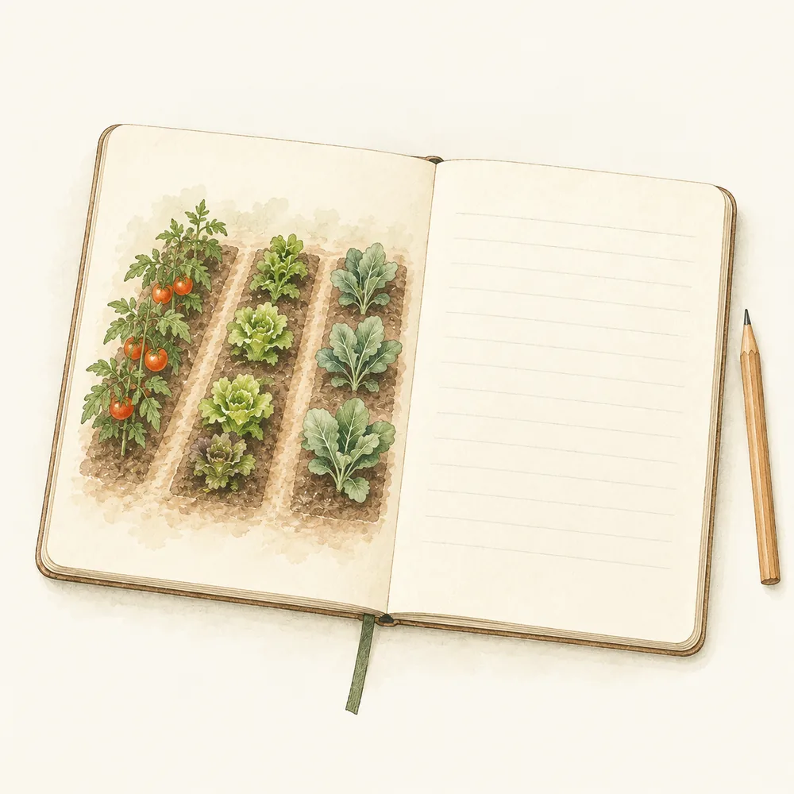
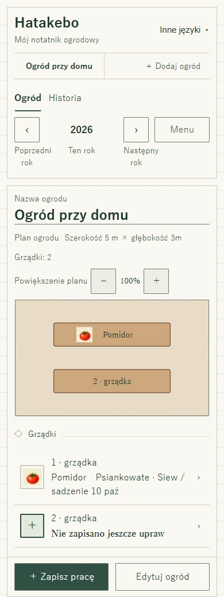

Narysuj swój kawałek ziemi
Podaj rozmiar i kształt, dodaj grządki oraz nazwane punkty orientacyjne. Wymiary wpiszesz bez przeciągania — również na komputerze.
Twój notatnik do warzywnika i na działkę
Zapisz to, co chcesz pamiętać o swoim ogrodzie.
Grządki, warzywa i pielęgnacja gleby — w jednym prostym notatniku. Bez zbędnych funkcji i skomplikowanych kroków. Z czytelnymi przyciskami i tekstem, który możesz powiększyć.
Na telefonie i komputerze. W metrach i centymetrach.

Pomidory z zeszłego roku. Kompost dodany kilka miesięcy temu. Zapisz drobne prace, by łatwo do nich wrócić, kiedy znów staniesz przy grządkach.
Cztery rzeczy przydatne w ogrodzie
Podaj rozmiar i kształt, dodaj grządki oraz nazwane punkty orientacyjne. Wymiary wpiszesz bez przeciągania — również na komputerze.
Zapisz roślinę i datę siewu lub sadzenia. Wybierz rok, aby wrócić do wcześniejszych upraw. Pamiętasz tylko rok? To też wystarczy.
Nawóz, kompost i nawóz zielony, a do tego data, ilość lub notatka — jeśli chcesz. Wpis może dotyczyć jednej grządki albo całego ogrodu.
Wydrukuj plan i listę grządek. Obok znajdziesz wymiary i powierzchnię. Możesz dopisać coś odręcznie albo omówić plan z bliską osobą.

Zacznij od planu
Która to była grządka? Znajdź ją na planie i wybierz, aby zobaczyć uprawę oraz ostatnie prace.
Na telefonie i komputerze korzystasz z tych samych przycisków. Możesz powiększyć tekst. Jeśli brakuje rośliny na liście, wpisz własną nazwę — na przykład boćwinę lub seler.
Zacznij od jednej grządki i jednej rzeczy do zapamiętania. Aplikacja, pomoc, poradnik ze zdjęciami ekranu i wydruk są po polsku.
Narysuj swój ogród ↗Pierwsze kroki
Zapisuj tylko to, co chcesz zachować.
Nie po to, by komuś pokazać, lecz dla siebie — na kolejną wizytę w ogrodzie.
Przed wyjściem do ogrodu
Otwórz Hatakebo z internetem i poczekaj na „Gotowe do pracy bez internetu”. Potem możesz ponownie otworzyć ogród i zapisywać prace bez połączenia, na tym samym urządzeniu i w tej samej przeglądarce.
Zapisy ogrodu zostają w Twojej przeglądarce, nie na serwerze Hatakebo. Urządzenia nie synchronizują się automatycznie. Z menu pobierzesz kopię zapasową — zachowaj ją osobno na wypadek utraty telefonu lub danych przeglądarki.
Zanim zaczniesz
Tak. Planowanie grządek, zapisy upraw i prac, kopie zapasowe oraz drukowanie są bezpłatne. Nie potrzebujesz konta.
Nie. Na początku listy są m.in. pomidor, ogórek, marchew, burak ćwikłowy, rzodkiewka i koper, aby łatwiej było je znaleźć. Dalej rośliny są uporządkowane alfabetycznie. To nie kalendarz siewu. Terminy dobierz do warunków w swoim ogrodzie i wskazówek na opakowaniu nasion.
Użyj pola „Zapisz roślinę spoza listy”. Nazwa zostanie na planie, w historii, wydruku i kopii zapasowej. Takim roślinom nie przypisujemy grupy, więc nie sprawdzamy dla nich płodozmianu.
Nie dają takiej gwarancji. Porównują grupy roślin w zapisanej historii. To wskazówka, by zajrzeć do notatek, a nie diagnoza gleby czy chorób.
Tak. Pobierz kopię zapasową i wczytaj ją na drugim urządzeniu. Import zastępuje jego zapisy, a nie łączy dwóch zestawów danych. Wersje językowe tej witryny współdzielą zapisy w tej samej przeglądarce.
Wybierz „Pomoc i pytania” w menu aplikacji. Odpowiedzi są po polsku. Kontakt prowadzi do zewnętrznego formularza, który obecnie może być po japońsku i wymaga internetu. Polska wersja formularza nie jest jeszcze dostępna.